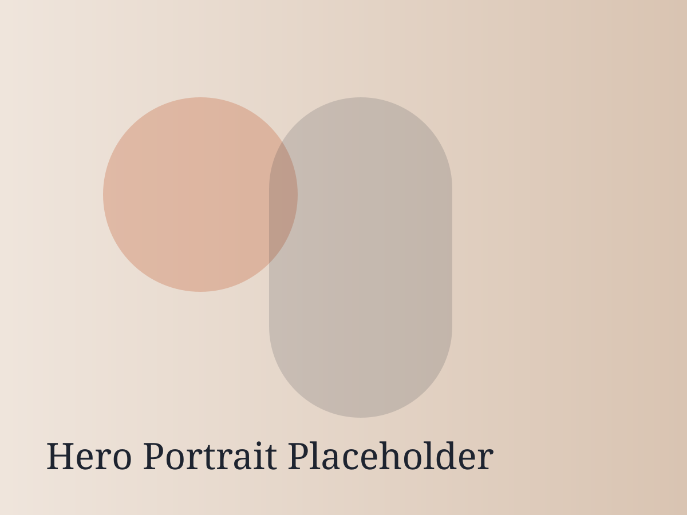

Curly Hair
Shape-forward cuts and moisture-aware styling that help curls hold definition from wash day to day three.
I’m Sam Strock, a San Francisco hairstylist delivering tailored cuts and color with a one-on-one, inclusive approach. Every service is customized to your texture, goals, and lifestyle.

Shape-forward cuts and moisture-aware styling that help curls hold definition from wash day to day three.
Lived-in blondes, ribbons of dimension, and bright face-framing color that grows out softly.
Editorial-informed lines and movement-focused layers designed for your daily routine.
Thoughtful change sessions with clear plans, bond care, and realistic maintenance guidance.


With advanced training in curly cutting and color chemistry, I blend technical precision with a modern editorial eye. You get honest consultation, collaborative planning, and results that work in real life.
Meet Sam“Sam listened, mapped out a plan, and gave me the first curly cut I actually know how to maintain.”
— Maya R.“My blonde is bright but still healthy. The grow-out is beautiful and low-stress.”
— Claire D.“Confident, welcoming, and detail-obsessed. I rebooked before I left the chair.”
— Jordan K.New here? Book a consultation if you want a major color shift or a big shape change. Arrive with clean dry hair unless your service notes say otherwise.
Read full policiesBook with Sam Strock and get a customized plan for cut, color, and care.
Book Your Appointment